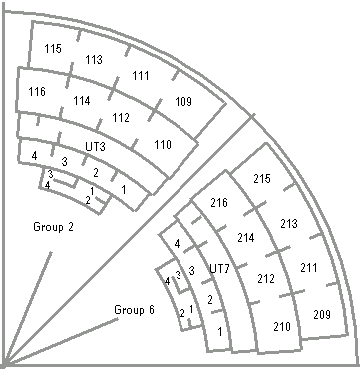
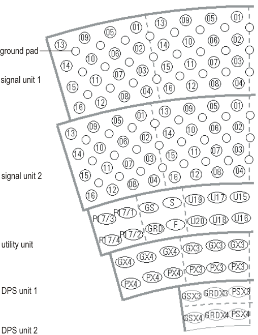

9.5 inch WPI DUT board
The figure below shows the recommended general structure for two of the eight pogo tower segments (viewed from the DUT side) of a 9.5 inch WPI DUT board. Each segment contains smaller units, starting from the center with DPS units 2 and 1, the utility unit (UT), and signal units 2 and 1.

The figure below shows the proposed pin layout of a 9.5 inch WPI (viewed from the pogo tower side). The following names are used in the utility area:
- U: utility pin
- P17/x: pins for pin number 17
- F: High-performance PMU force pin
- GRD: High-performance PMU guard pin
- S: High-performance PMU sense pin
- GS: High-performance PMU ground sense pin
These names are used in the DPS area:
- G: ground pin
- GS: ground sense pin
- GRD: guard pin
- P: power pin
- PS: power sense pin.

If you are using one of the standard V93000 wafer prober DUT boards E7018AA or E7018AB, all signal lines connect to the digital pin blocks.
See drawings D-E7018-96501 and D-E7018-96504 for the 512 pin V93000 WPI board for pad numbering and other details in Layout information: DUT board prober interface.